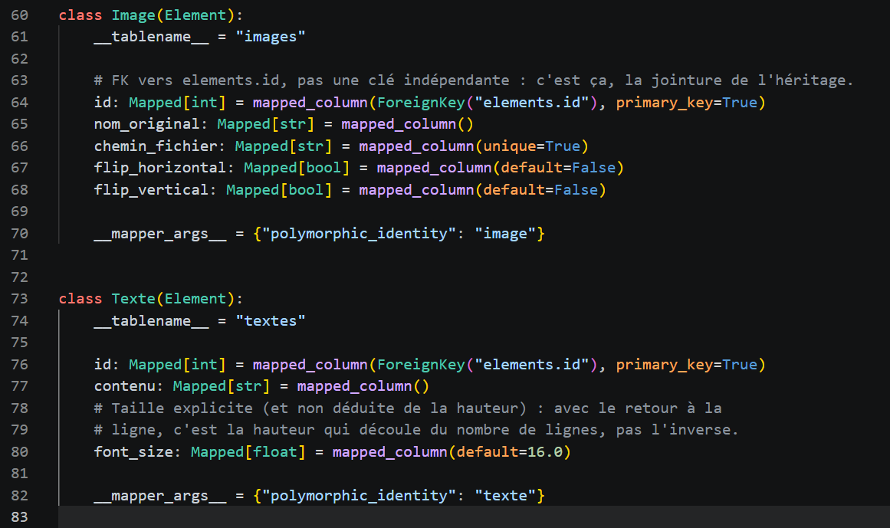
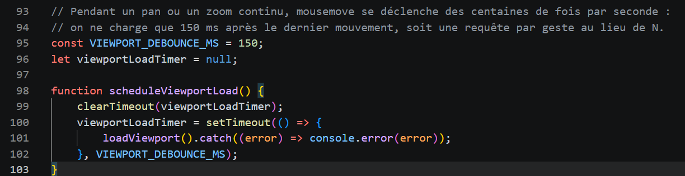
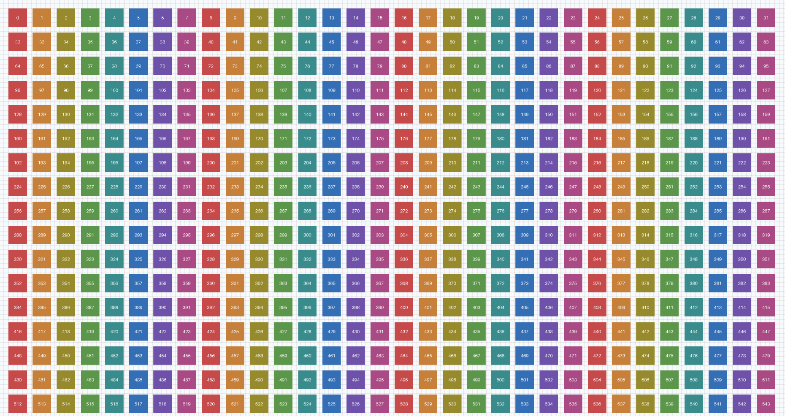
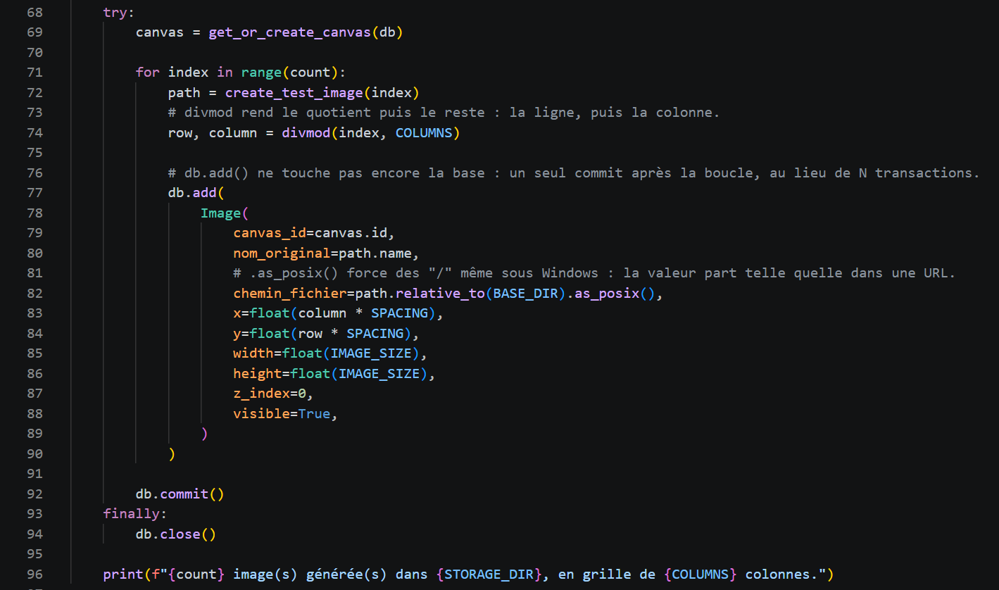

Obsidian Canvas
Un canevas dans une application de notes.
Très lent vers 50 images, dans mon usage.
Soutenance · 28 septembre 2026
Anthony Compas
Full Stack Python Developer
Mailcompasanthony@gmail.com
LinkedInlinkedin.com/in/anthony-compas-205875183
Aujourd'hui : Reference Manager, un board pour ranger ses références visuelles.
01 · Le projet
Le besoin : un board qui reste fluide quand il grossit.
Un tableau infini pour ranger ses références visuelles : on y dépose des images, on les place librement, on zoome, on ajoute du texte.
Je range mes références visuelles dans Obsidian Canvas.
Vers 50 images, le canevas devient très lent.
Pour tenir, je fusionnais des images dans Photoshop. Une fois fusionnées, impossible de les déplacer une à une.
01 · Le projet
Un canevas dans une application de notes.
Très lent vers 50 images, dans mon usage.
La référence chez les artistes. Une application installée, au code fermé.
Elle peut garder toutes les images en mémoire, en pleine résolution : sa limite, c'est la mémoire de l'ordinateur.
Une application web locale, au code public.
Elle tourne dans un onglet de navigateur, limité à 2 à 4 Go. D'où le choix de ne charger que ce qui est à l'écran.
01 · Le projet
À l'écran, on voit quelques dizaines d'images.
Un outil simple charge quand même tout le board.
Mon objectif : rester fluide, avec 50 comme avec 1 000 images.
02 · L'outil
02 · L'outil
| Techno | Son rôle | Pourquoi ce choix |
|---|---|---|
| Python · FastAPI | Le serveur : il reçoit les images et répond à l'interface. | Rapide à écrire, et il vérifie les données tout seul. |
| SQLite | La base de données : un simple fichier. | Rien à installer pour une application locale. |
| SQLAlchemy | Le lien entre le code Python et la base. | Il gère bien des éléments de types différents : images et textes. |
| Pillow | Lit la vraie taille des images à l'import. | Chaque image est posée à sa taille réelle. |
| JavaScript · Canvas | L'interface : tout le board est dessiné dans une zone de dessin. | Rapide avec beaucoup d'images, sans framework à ajouter. |
02 · L'outil
Tout ce qui est posé sur le board : une position, une taille, visible ou non.
En plus : le fichier, la symétrie.
En plus : le contenu, la taille du texte.

Canvas et Groupe sont déjà dans la base, sans interface pour l'instant.
02 · L'outil
Le board est une carte. Chaque élément y a une adresse fixe, enregistrée en base. Cette slide, par exemple : .
L'écran est une caméra au-dessus de la carte : se déplacer la fait glisser, zoomer la rapproche.
Pour afficher un élément, on convertit son adresse en position à l'écran. Pour un clic, on fait l'inverse.
Zoom : comme sur Google Maps, le point sous la souris reste sous la souris.
03 · La performance
Au départ, chaque ressource payait pour le board entier.
| Problème | Avant | Objectif |
|---|---|---|
| Requêtes à la baseSQL | 1 000 éléments → beaucoup de requêtes | 1 requête |
| Données envoyéesJSON | Tous les éléments | Seulement ceux proches de la vue |
| Images | Toutes téléchargées | Seulement celles nécessaires |
| MémoireRAM | Toutes les images visitées restent | Décharger les images éloignées |
| DessindrawImage() | Beaucoup de dessins à chaque rafraîchissement | Seulement les éléments chargés |
03 · La performance
Images chargées au démarrage
1 000 →
84
Attente de la réponse du serveur
~630 ms →
~65 ms
Requêtes pour 300 mouvements de souris
300 →
1
Éléments gardés en mémoire après un long déplacement
135 →
1
Mesurerun script crée 1 000 images de test, je compte et je chronomètre
Corrigerune seule chose à la fois
Remesurerle même test, pour comparer

03 · La performance

Au démarrage, la barre d'état affiche 84 / 1 000 : seules les images proches de l'écran sont chargées.
Un script crée 1 000 images numérotées, rangées en grille. Je sais donc à l'avance combien doivent apparaître à l'écran.

03 · La performance
33 Mo
pour une seule image 4K ouverte en mémoire
3 840 × 2 160 pixels × 4 octets
Que le fichier pèse 2 Mo ou 500 Ko, l'image prend la même place une fois ouverte.
Dans les ~2 Go de mémoire d'un onglet
Sans vignettes
~60 images 4K
Avec vignettes (LOD)
1 000+
vignettes de 256 px : 262 Ko chacune, 125 fois moins
Les vignettes sont chiffrées, pas encore faites.
04 · Le bilan
Les cinq fonctionnalités prévues au départ sont faites, chargement par écran compris.
84 images chargées au démarrage au lieu de 1 000, et un serveur qui répond 10 fois plus vite.
Décisions, feuille de route, backlog et mesures, tenus à jour tout au long du projet.
Et cette présentation tourne dans l'outil lui-même.
04 · Le bilan
Les tests automatisésla base pour faire évoluer le reste en toute sécurité
Les vignettes (LOD)de ~60 à plus de 1 000 images 4K
Le code JavaScript en moduleschaque fichier dit de quoi il dépend : le prérequis du plugin Obsidian
Les groupesdéjà spécifiés, il reste à les coder
Plusieurs boardsla base est prête, il manque l'interface
04 · Le bilan
Reference Manager reste fluide quand le board grossit.
Pour y arriver, j'ai mesuré, corrigé, puis remesuré, et j'ai noté ce que j'ai choisi de ne pas faire.
Merci. Des questions ?